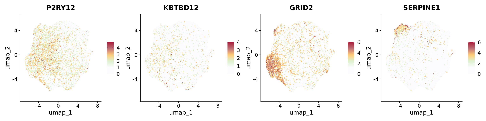
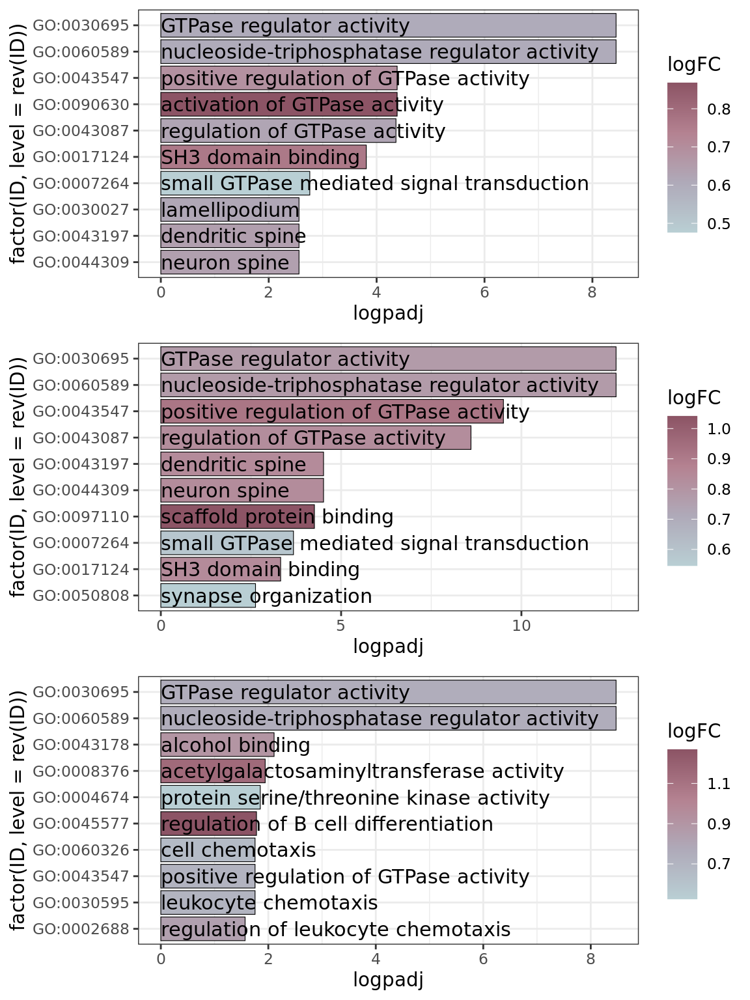

This script depicts the specific and in-depth characterization of the homeostatic clusters, including gene markers, gene ontology and transcription factor enrichment, related to Figure 2.
Dendrogram accounting for the averaged gene expression of the cluster markers (from Figure 1F) per cluster. The “RNA” assay was used. The calculation of the significant cluster markers is depicted at the “Characterization of the HuMicA” script from this repository.
The representation of the HuMicA object was edited to depict only the four homeostatic populations, namely clusters 0 (Homeos1), 4 (Homeos2) and 8 (Homeos3).
The most prominent markers of each cluster were represented separately in Feature plots: P2RY12 and KBTBD12 for Homeos1; GRID2 for Homeos2; SERPINE1 for Homeos3 (related to Supplementary Figure 6A).
Humica <-SetIdent(Humica, value = Humica@meta.data$integrated_snn_res.0.2)DefaultAssay(Humica)<-"RNA"Humica <-NormalizeData(Humica)FeaturePlot(Humica, features =c("P2RY12","KBTBD12","GRID2","SERPINE1"), ncol=4,label = F, repel =TRUE,pt.size =0.5) &scale_colour_gradientn(colours =c("#FCFCFF","#FCFCFF","#DCF2CE","#FFCB77","#BD6B73","#A30B37"))
Scale for colour is already present.
Adding another scale for colour, which will replace the existing scale.
Scale for colour is already present.
Adding another scale for colour, which will replace the existing scale.
Scale for colour is already present.
Adding another scale for colour, which will replace the existing scale.
Scale for colour is already present.
Adding another scale for colour, which will replace the existing scale.

Gene ontology
Gene ontology (GO) was calculated with the enrichGO function from clusterProfiler.
cnetPlot
GO enrichment was calculated for the list of markers of each homeostatic cluster. The simplify function was used to remove redundancy to the obtained results. The cnetplots were set to represent only the top 3 categories.
The top 10 significant GO terms for each of the homeostatic clusters were represented in barplots to provide a broader insight on the GO enrichment (related to Supplementary Figure 6B). GO was recalculated and edited to obtain the Fold Change of enrichment.
Warning: Using `size` aesthetic for lines was deprecated in ggplot2 3.4.0.
ℹ Please use `linewidth` instead.
do.call(grid.arrange,p)

Transcription factor enrichment
The collection of transcription factors (TFs) and their target genes was obtained from the CollecTRI repository from decoupleR. The enrichment analysis was performed using the viper package. The Humica.markers file correspond to the broad spectrum differential expression output, mentioned in the “Characterization of the HuMicA” script of this repository. The following represents the loop for the calculation of TF enrichment in all nine clusters.
#Create the regulon from the CollecTRI repository in the appropriate format for viper.net <- decoupleR::get_collectri(organism='human', split_complexes=FALSE)## create regulon for viper# Function to create named tfmode and add likelihoodcreate_named_tfmode <-function(df) {# Ensure tfmode is numeric tfmode_named <-setNames(as.numeric(df$mor), df$target) likelihood_vector <-rep(1, length(tfmode_named)) # Assuming constant likelihood of 1list(tfmode = tfmode_named, likelihood = likelihood_vector)}# Group by source and apply the transformationsource_target_list <- net %>%group_by(source) %>%summarise(tfmode =list(setNames(as.numeric(mor), target)),likelihood =list(rep(1, n())) ) %>%deframe()
Warning: `x` must be a one- or two-column data frame in `deframe()`.
The plot depicts the enrichment for all clusters in the HuMicA but only considers the significant TFs for the three homeostatic clusters is considered for representation. The statistically significant TFs were considered for an adj p value (FDR) < 0.05.